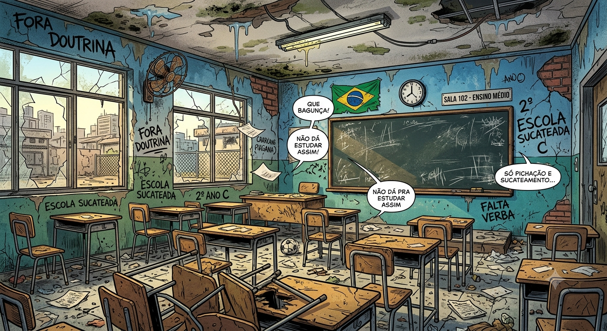
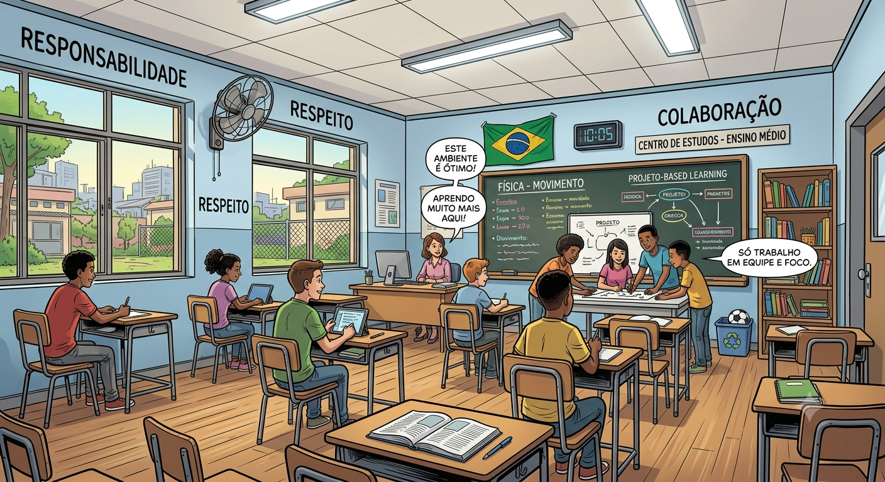
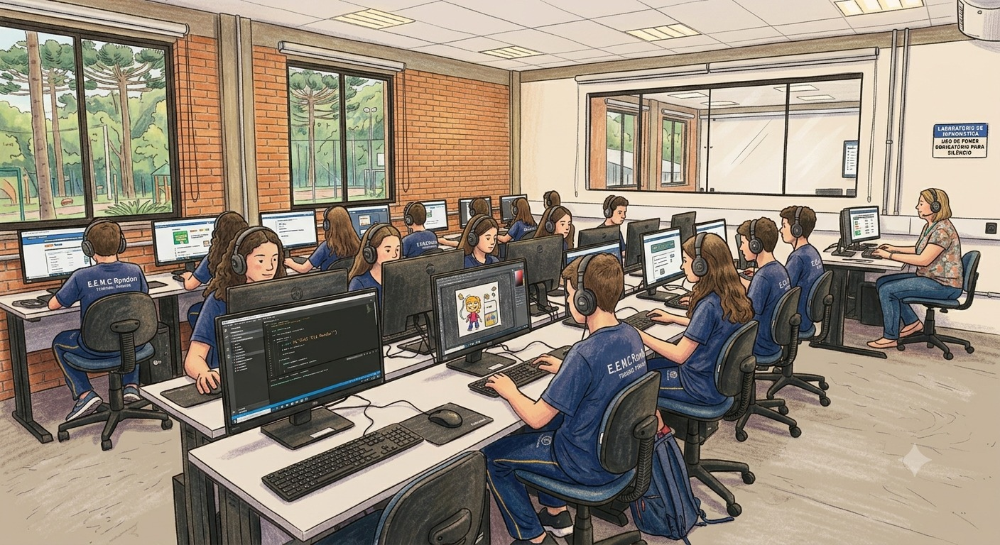

Precisamos de um ambiente escolar confortável e exemplar, só que infelizmente estamos vivenciando um ambiente escolar precário.

Já na imagem abaixo vemos um ambiente escolar mais agradável onde nossos estudantes possam estudar sem preocupação.

agora com uma sala mais organizada podemos nota a diferença de clima, ambiente e harmonização
infelizmente estamos em um estado precario de fones em sala de aula como mostrado abaixo
agora vermos um lugar mais agradavel
